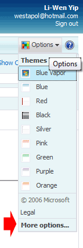
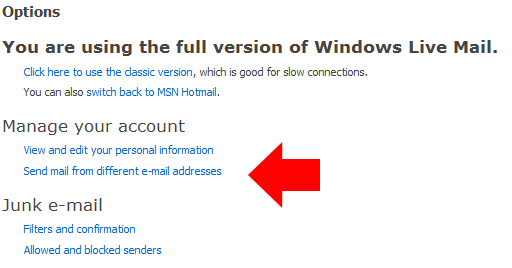
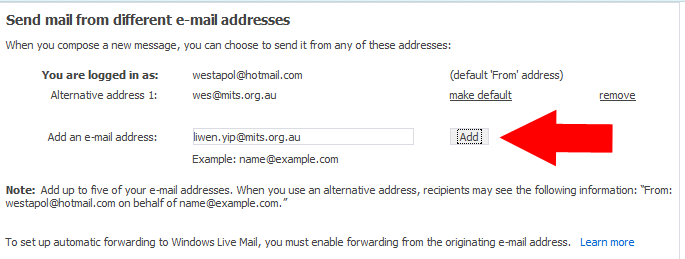
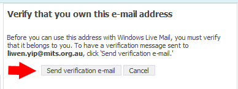
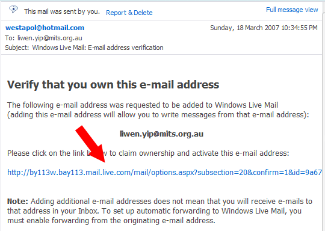
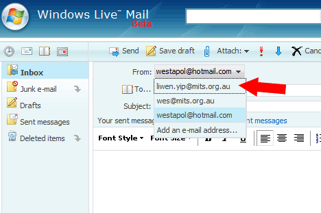

How to...
Send mail from your.name@mits.org.au using Hotmail / Windows Live Mail
- If you haven'y already, set up up your MITS account to forward all emails to your Hotmail account. (instructions)
- Log in to your Hotmail account.
- Click "Options" -> "More Options".

- Click "Click "Send mail from different e-mail addresses". (If you can't see this option, switch to the full version of Windows Live Mail)

- Enter your MITS email address and click "Add"

- Click "Send Verification email"

- Go back to your Inbox. You should have gotten an email asking you to "Verify that you own this email address". Click on the link in the email.

- Now when you go to compose emails, you should have a drop-down box at the top which lets you use your MITS email address.
Note: You still need change the From: address if you are replying to an email that was sent to your MITS address.

Questions? Problems? Angry mobs with pitchforks? Contact Wes.
19/03/2007